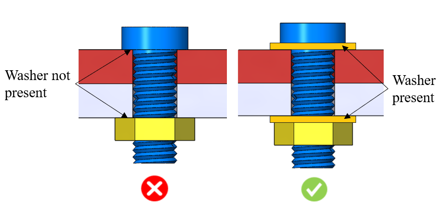

本ルールは、ボルト締結アセンブリにおけるワッシャーの有無をチェックします。ボルトまたはナットが軟質材に締結されている場合は、ワッシャーを使用することが推奨されます。
ボルト締結アセンブリにおけるワッシャーは、材料に作用する座面荷重を均一に分散させる役割を果たします。一般に、軟質材は締結時に損傷しやすく、損傷や腐食後の材料欠損によって締結部品の位置ずれが発生する可能性があります。そのため、ワッシャーの使用が強く推奨されます。
ボルトが軟質材に締結される場合は、ワッシャーを使用してください。ワッシャーは座面荷重を均一に分散させ、締結応力による材料損傷を防止します。

注記:
本ルールは、トップレベルのアセンブリ部品に対して、DFMPro 設定に基づいて実行できます。
チェックを正しく実行するためには、アセンブリ内のボルト、ワッシャー、およびナットを識別するために、ハードウェア名およびハードウェアタイプの情報を入力することが必須です。ハードウェアの設定については、ハードウェアデータベースを参照してください。